Best For
Buyers who want new-build near the coast at below Estepona pricing, and are comfortable driving for services.
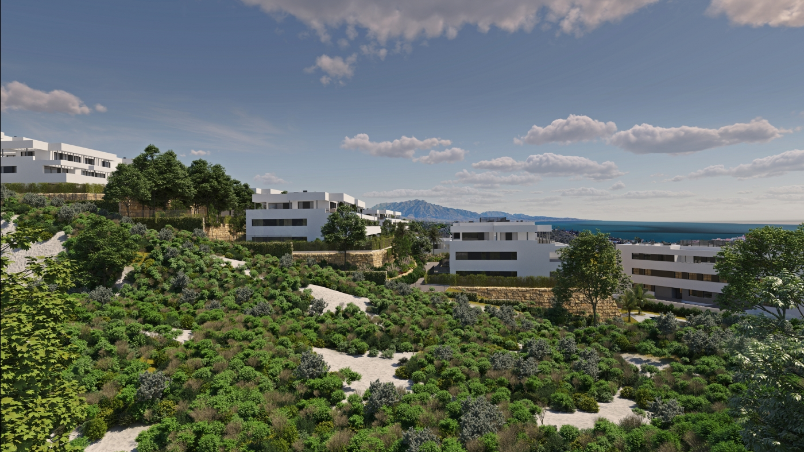
The last municipality before the Cadiz border, and three separate markets in one: a hilltop white village, an inland golf valley and a low-rise stretch of coast.
Casares pueblo is the hilltop white village most people picture: steep, historic and genuinely lived in, but a real drive from the beach. The coastal strip -- Marina de Casares, Bahia de Casares and Casares Costa -- is low-rise, quiet and walkable to the sand. Between the two sits a golf valley built around Casares Golf, Dona Julia and Finca Cortesin.
Buyers usually arrive here after looking at Estepona and finding the same specification for less. The trade-off is that Casares is a car-dependent municipality with fewer everyday services than a town, and the three zones are far enough apart that choosing between them matters more than choosing a building.
Buyers who want new-build near the coast at below Estepona pricing, and are comfortable driving for services.
The pueblo, the golf valley and the coast are separate markets. Daily life differs sharply between them.
Mostly low-rise apartments and townhouses on the coast and around the golf courses; village houses in the pueblo.
Marina de Casares is the most walkable; Dona Julia the most affordable; the pueblo the most characterful and least convenient.
Less built-out than its neighbours, and priced accordingly -- but the geography does most of the work here.
Finca Cortesin hosted the Solheim Cup in September 2023. It sits roughly six minutes from the new-build releases on this stretch, which is unusual proximity to a course of that standing without Sotogrande or Marbella pricing.
Casares pueblo is what the municipality is known for, but very little new-build happens there. Almost all current supply is on the coastal strip and around the golf courses, several kilometres and a winding road away.
Casares has limited everyday services of its own. Estepona is under 15 minutes away and is where most residents shop, eat out and see a doctor -- worth driving the route at least once before committing.
Malaga is under an hour. Gibraltar is closer still, which matters more to UK buyers than the Malaga-centric marketing on this coast usually admits.
Use the area average for orientation only. New-build pricing depends heavily on the exact location, specification and views.
Indicative asking-price averages for resale homes, August 2026. These figures come from Fotocasa, not the Idealista reports used on the other area pages, so treat them as a guide to the spread between Casares sub-areas rather than a like-for-like comparison with Marbella or Estepona.
Only projects currently matching this area are shown. Price and availability are confirmed before a viewing.
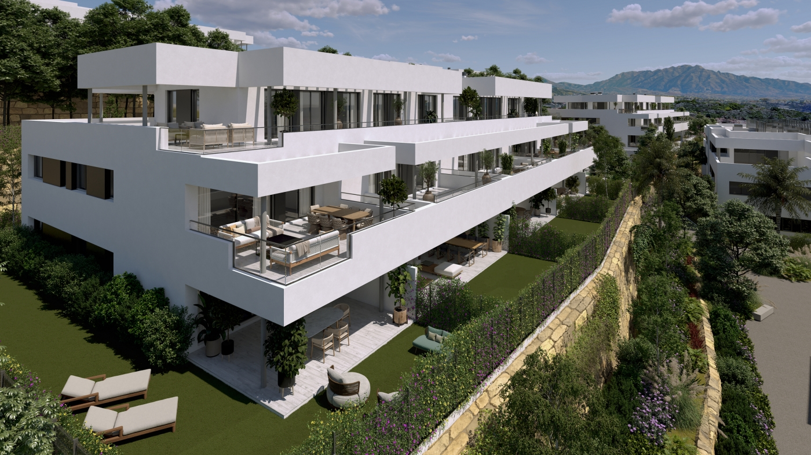
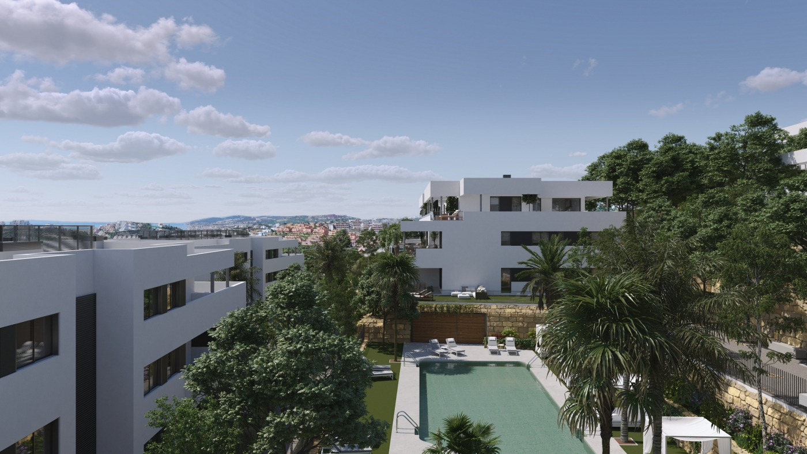
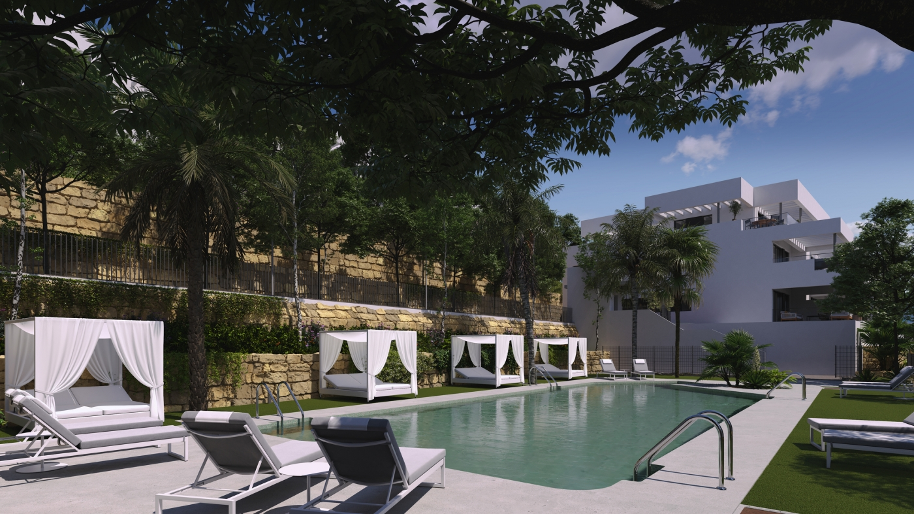
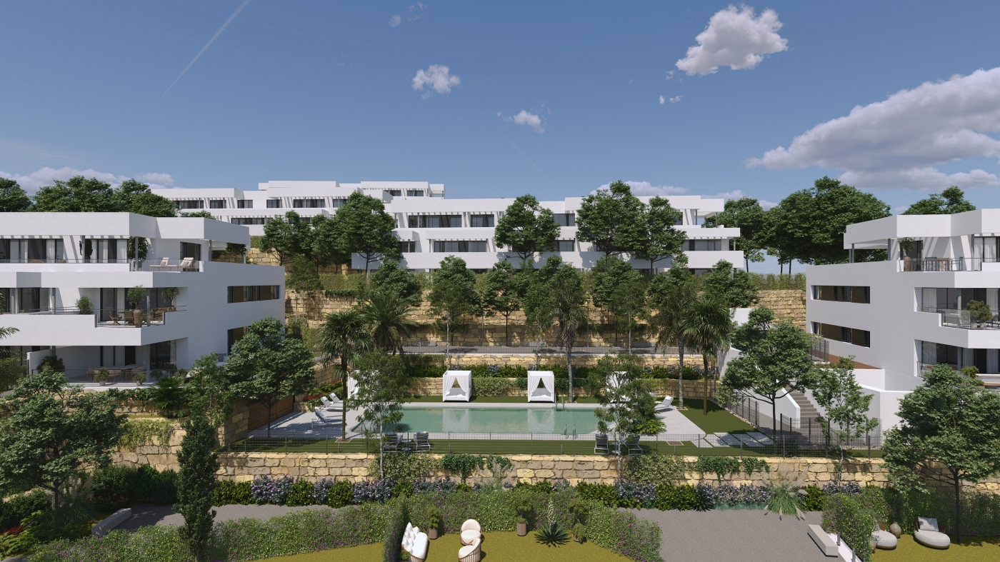
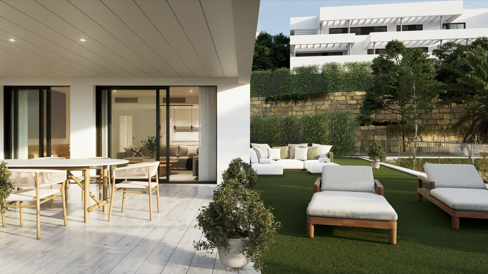
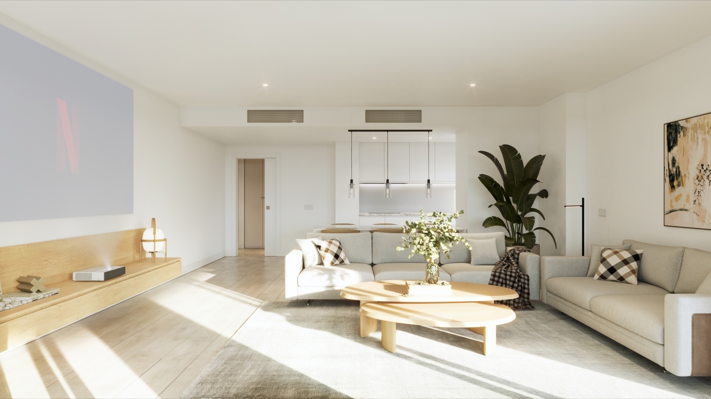
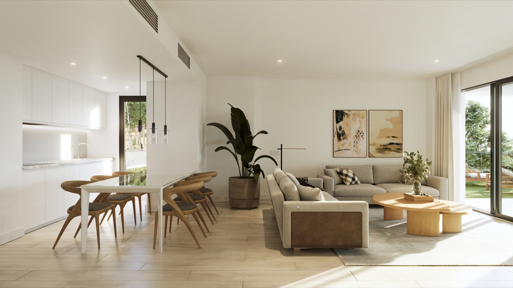
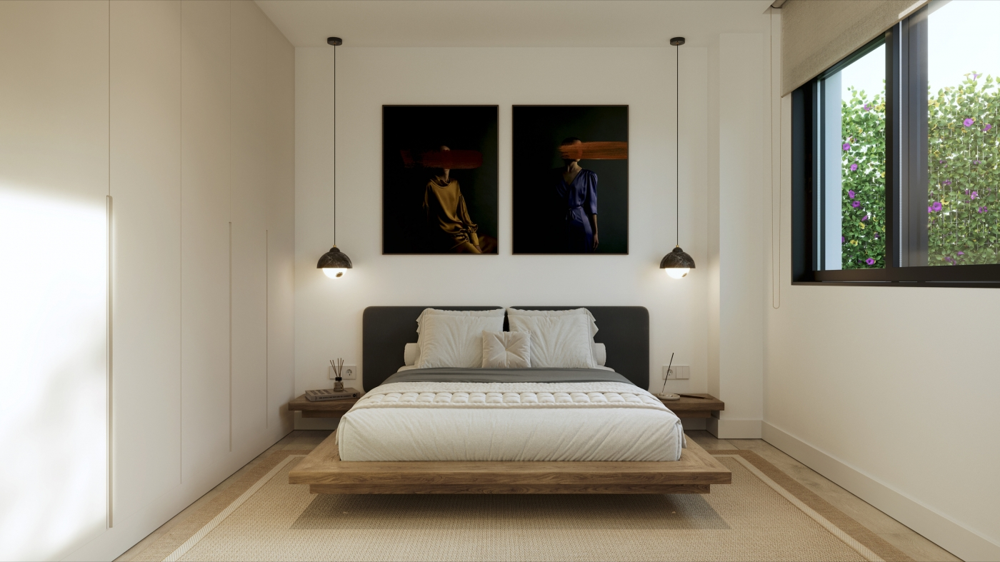
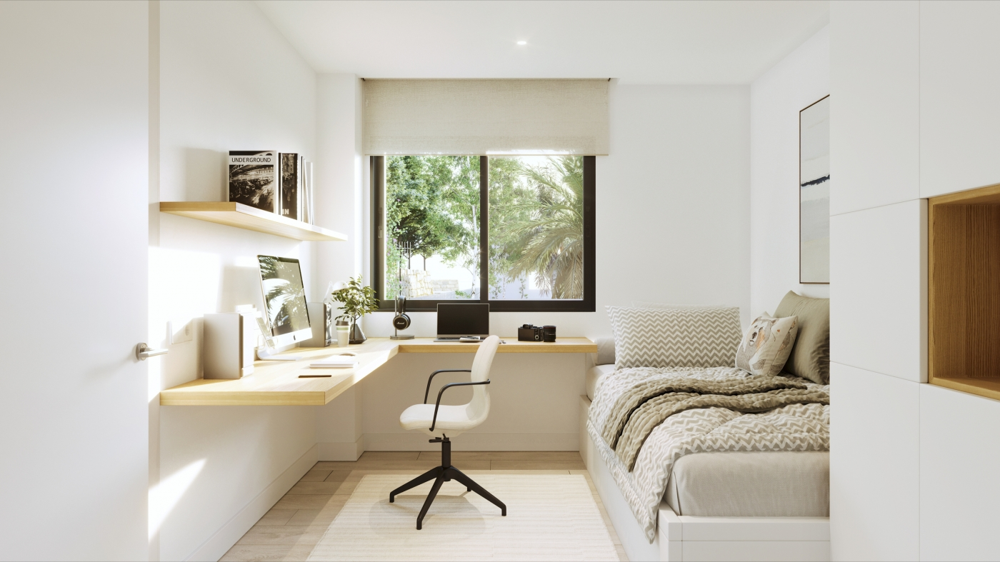
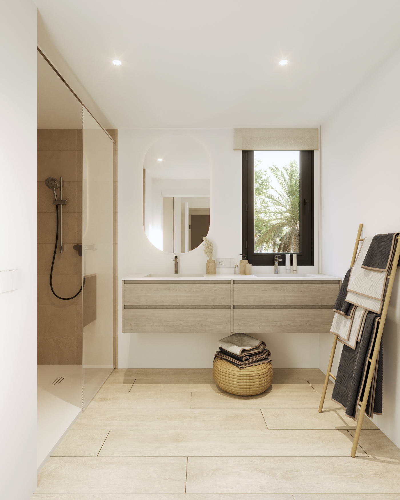
36 two- and three-bedroom apartments stepping down a hillside in Casares, each with a garage space, storeroom and terrace.
The municipal average asking price for resale homes was €4,242 per m² in August 2026, but that average hides more than it shows. Marina de Casares asks €4,455, Casares pueblo €4,447, Casares Golf and Casares del Sol €4,228, Bahía de Casares €4,121 and Doña Julia Golf €3,905. The gap between the cheapest and dearest of those is close to 15%.
Generally, yes — but the figures on this page are not a like-for-like comparison. The Casares averages come from Fotocasa, because the Idealista municipal report does not break Casares down by zone, while the Estepona figure comes from Idealista. Different panels and different months. Treat the direction as reliable and the exact gap as indicative.
The hilltop pueblo, the golf valley and the coastal strip are three separate markets and daily life differs sharply between them. Marina de Casares is the most walkable, Doña Julia the most affordable, and the pueblo the most characterful and the least convenient.
Mostly in Estepona, which is under fifteen minutes away. Casares has limited everyday services of its own, so it is worth driving that route at least once before committing rather than reading it off a map.
Malaga is under an hour by car, and Gibraltar is closer still. That second option matters more to UK buyers than the Malaga-centric marketing on this coast usually admits, and it is worth factoring into how often you realistically expect to travel.
Almost all current supply is on the coastal strip and around the golf courses — mostly low-rise apartments and townhouses — rather than in the pueblo, which is several kilometres and a winding road away and sees very little new construction.
Tell us your budget and priorities. We will reply with matching projects and current availability.